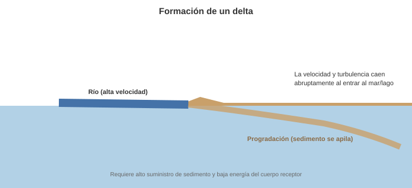
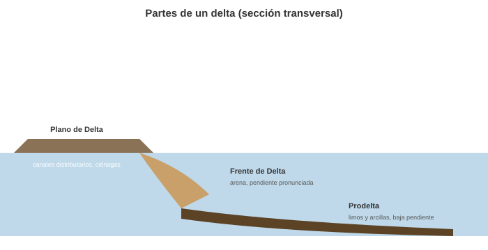
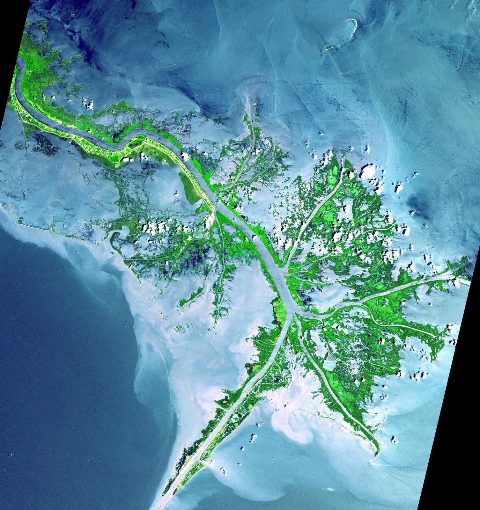
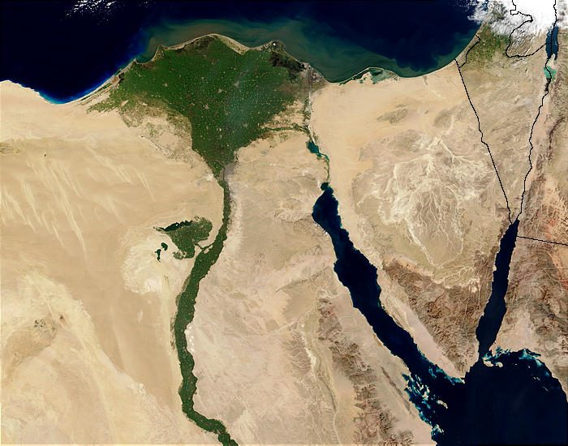
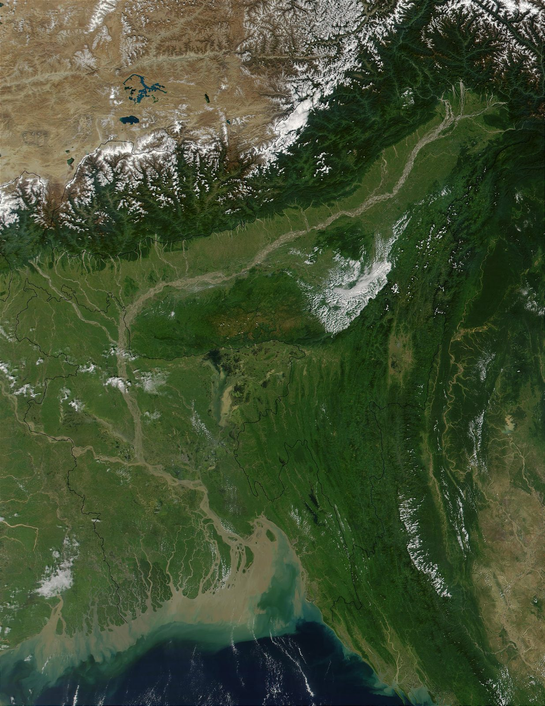

Geomorfología de Ambientes Deltaicos#
Los deltas son uno de los ambientes de deposición más importantes y complejos de la Tierra, formados en la interfaz entre un río y un cuerpo de agua estancada (un mar, lago o estuario). Su morfología y estructura están controladas por un delicado balance entre la fuerza del río y la energía del cuerpo receptor (olas, mareas y densidad del agua) [Galloway, 1975].
Important
Objetivos de aprendizaje:
Comprender las condiciones necesarias para la formación y progradación de un delta.
Identificar las partes de un delta en sección transversal (plano de delta, frente de delta, prodelta).
Clasificar los deltas según el agente de control dominante (río, olas o mareas).
Analizar ejemplos locales de sistemas deltaicos colombianos y su importancia ambiental.
1. ¿Qué es un Delta?#
Un delta es un cuerpo de sedimento formado por la deposición aluvial de material transportado por un río que desemboca en un cuerpo de agua relativamente estancada. El término se deriva de la forma triangular (similar a la letra griega mayúscula delta, \(\Delta\)) del delta del Nilo.
2. Proceso de Formación de un Delta#
La formación de un delta requiere dos condiciones fundamentales:
Suministro Sólido (Carga de Sedimentos): El río debe transportar una cantidad significativa de sedimento (arena, limo y arcilla).
Baja Energía del Receptor: La energía del cuerpo receptor (olas, mareas) debe ser lo suficientemente baja para que los sedimentos se acumulen más rápido de lo que son removidos y dispersados.
Cuando el río entra en el cuerpo de agua, su velocidad y turbulencia disminuyen abruptamente, haciendo que su capacidad de transporte colapse. Los sedimentos caen por decantación (suspensión) y se apilan, iniciando la progradación (crecimiento) del delta hacia el mar.
{kind=link}

Fig. 122 Formación de un delta: al entrar al cuerpo de agua receptor, el río pierde velocidad y deposita su carga de sedimento. Elaboración propia.#
3. Partes de un Delta (Sección Transversal)#
Un delta activo se construye hacia el cuerpo receptor y exhibe una estructura clásica de tres capas o planos que reflejan la disminución progresiva de la energía del flujo:
Plano de Delta (Delta Plain):
Es la parte subaérea (por encima del agua), o superficialmente sumergida, más cercana a la tierra.
Está dominada por la deposición fluvial (canales distributarios) y los procesos subaéreos (flujo en llanura de inundación, ciénagas, pantanos).
Frente de Delta (Delta Front):
Es la porción más empinada y abrupta del delta, donde el material más grueso (arena) se deposita rápidamente después de que el río pierde velocidad.
Es la zona de mayor inestabilidad, propensa a la falla y el deslizamiento de sedimentos.
Prodelta (Prodelta):
Es la porción subacuática y de menor pendiente, más alejada del canal.
Está compuesta por los sedimentos más finos (limo y arcilla) que son transportados en suspensión lejos del frente del delta.
{kind=link}

Fig. 123 Estructura en sección transversal de un delta: plano de delta, frente de delta y prodelta. Elaboración propia con base en Galloway [1975].#
4. Tipos de Delta (Clasificación Morfológica)#
La morfología de un delta es un reflejo del balance entre el Río (fuerza de deposición) y los Agentes Marinos (fuerzas de redistribución). La clasificación dominante se basa en el agente de control [Galloway, 1975]:
4.1. Delta Dominado por el Río (River-Dominated Delta)#
Proceso Dominante: La deposición del sedimento supera con creces la capacidad de redistribución de las olas y las mareas.
Morfología: Forma lobular o de pata de pájaro (bird’s foot), con múltiples canales distributarios largos y bien desarrollados que progradan hacia el mar.
Ejemplo Clásico: Delta del Mississippi.
{kind=link}

Fig. 124 Delta del Mississippi (EE. UU.), un delta dominado por el río con su característica forma de “pata de pájaro”. Imagen: NASA/Terra ASTER, Wikimedia Commons (dominio público).#
{kind=link}
4.2. Delta Dominado por las Olas (Wave-Dominated Delta)#
Proceso Dominante: Las olas redistribuyen los sedimentos a lo largo de la línea de costa tan pronto como son depositados por el río.
Morfología: La línea de costa es recta y suave. La acción de las olas forma barras de arena paralelas a la costa y un frente deltaico más compacto. Tiende a tener una forma triangular u ojival.
Ejemplo Clásico: Delta del Nilo.
{kind=link}

Fig. 125 Delta del Nilo (Egipto), un delta dominado por las olas con línea de costa suave. Fotografía: Jacques Descloitres, MODIS Rapid Response Team, NASA, Wikimedia Commons (dominio público).#
{kind=link}
4.3. Delta Dominado por las Mareas (Tide-Dominated Delta)#
Proceso Dominante: Las fuertes corrientes de marea transportan y reelaboran los sedimentos en dirección paralela y perpendicular a la costa.
Morfología: El delta tiene forma de embudo y está disectado por numerosos canales amplios y rectos (barras de arena y canales orientados perpendicularmente a la costa).
Ejemplo Clásico: Delta del Ganges/Brahmaputra (Bangladesh).
{kind=link}

Fig. 126 Delta del Ganges-Brahmaputra (Bangladesh/India), un delta dominado por mareas con numerosos canales anchos. Imagen: NASA/Terra MODIS, Wikimedia Commons (CC BY 2.0).#
_(4996898562).jpg){kind=link}
Sistemas Deltaicos en Colombia#
Delta del Río Magdalena: Es un sistema complejo. Su desembocadura actual (Bocas de Ceniza) ha sido modificada por tajamares, pero el sistema incluye el Canal del Dique, un brazo distributario que desemboca en la Bahía de Cartagena.
Delta del Río San Juan (Chocó): Es un ejemplo espectacular de un delta dominado por mareas y alta carga de sedimentos en un ambiente de selva húmeda tropical.
Importancia Ambiental: Los deltas colombianos albergan extensos bosques de manglar, ecosistemas críticos para la protección de la costa y la biodiversidad.
Taller de Autoevaluación#
Condiciones de Formación: Si un mar tiene olas extremadamente fuertes y corrientes constantes que barren la costa, ¿es probable que se forme un delta de tipo “pata de pájaro”?
Estructura: Describa la secuencia de sedimentos que esperaría encontrar si perforamos un delta que está progradando (creciendo hacia el mar), desde el prodelta hasta el plano deltaico.
Clasificación: ¿En qué se diferencia visualmente un delta dominado por el río de uno dominado por las mareas?
Dinámica: ¿Qué es la avulsión en un delta y por qué es importante para su crecimiento lateral?
Caso Local: El Canal del Dique es un “brazo distributario artificializado”. ¿Qué impacto ha tenido el aumento de su carga de sedimentos en los arrecifes de coral de las islas del Rosario?